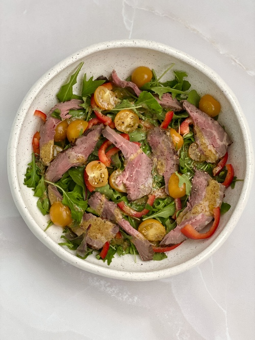

Салат с ростбифом и горчично-медовой заправкой
Перейти на гланую

Ингредиенты:
- Ростбиф.
- Помидоры Черри.
- Руккола.
- Болгарский перец.
- Оливковое масло.
- Дижонская горчица.
- Мёд.
- Сок лимона.
Как приготовить:
- На «подушку» из рукколы выкладываем нарезанный соломкой болгарский перец и половинки помидоров Черри. Добавляем сочный ростбиф от Gastro Moments.
- Для заправки тщательно перемешиваем немного оливкового масла, чайную ложку дижонской горчицы, чайную ложку мёда и сок лимона по вкусу.
- Лучше всего предварительно попробовать получившуюся заправку и скорректировать под ваш вкус, добавив, например, ещё немного лимона.
- Заправляем салат и наслаждаемся вкусом!.